First page of Book is given
Tamilnadu Government emblem is given
GOVERNMENT OF TAMIL NADU
STANDARD SEVEN TERM ONE
VOLUME - 3
SCIENCE
A publication under Free Textbook Programme of Government of Tamil Nadu
Department of School Education
Untouchability is Inhuman and a Crime
Government of Tamil Nadu
First Edition - 2019
Revised Edition – 2,020, 2,022, 2,023
Reprint – 2,021, 2,024
(Published under New Syllabus in Trimester Pattern)
NOT FOR SALE
Content Creation
State Council of Educational Research and Training
© S C E R T 2019
Printing & Publishing
Tamil Nadu Textbook and Educational Services Corporation
PREFACE
The Science textbook for standard Seven has been prepared following the guidelines given in the National Curriculum Framework 2005. The book enables the reader to read the text, comprehend and perform the learning experiences with the help of teacher. The Students explore the concepts through activities and by the teacher demonstration. Thus the book is learner centric with simple activities that can be performed by the students under the supervision of teachers.
HOW TO USE THE BOOK?
Lets use the QR code in the text books! How?
QR code, QR code description begins, QR CODE IS GIVEN, NUMBER, Z, N, Y, P, S Qr code description ends.
Seed Germination of Monocot Plant
Picture, picture description begins, Seed Germination of monocot Plant is given. picture description ends.
Picture, picture description begins, Seed Germination of dicot Plant is given. picture description ends.
Units
Unit 1, Measurement, Page Number, 1, Month June
Unit 2, Force and Motion, Page Number, 14, Month July
Unit 3, Matter Around Us, Page Number, 27, Month August
Unit 4, Atomic Structure, Page Number, 42, Month June
Unit 5, Reproduction and Modification in Plants, Page Number, 54, Month July
Unit 6, Health and Hygiene, Page Number, 74, Month August
Unit 7, Computer - Visual Communication, Page Number, 89, Month August
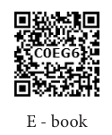
QR code, QR code description begins, E- Book QR Code is Given, Number, C, 0, E, G, 6. QR code description ends.
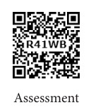
QR code, QR code description begins, Assessment QR Code is Given, Number, R,4, 1, W, B. QR code description ends.
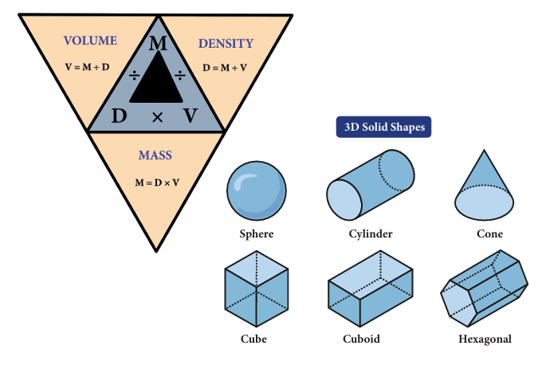
Picture, picture description begins, shows the relationship between volume, density and mass . picture description ends.
Picture, 3D solid shapes sphere,cylinder, cone, cube, cuboid, hexagonal is given
QR code, QR code description begins, QR Code is given, Number, 8, B, 2, 0, Y QR code description begins,
In day to day life, we measure many things such as weight of fruits, vegetables and food grains, volume of liquids, temperature of the body, speed of the vehicles etcetera, Quantities such as mass, weight, distance, temperature, volume are called physical quantities. A value and a unit are used to express the magnitude of a physical quantity. For example, let us assume that you walk 2 kilometre every day. In this example ‘2’ is the value and ‘kilometre’ is the unit used to express the magnitude of distance which is a physical quantity. In this lesson, we are going to study about fundamental quantities, derived quantities such as area, volume and density, and measurement of larger quantities.
Generally, physical quantities are classified into two types. They are: fundamental quantities and derived quantities.
A set of physical quantities which cannot be expressed in terms of any other quantities are known as fundamental quantities. Example, Length, Mass, Time. Their corresponding units are called fundamental units. There are seven fundamental physical quantities in SI Units (System of International Units). They are given in Table 1.1.
Table 1.1, Fundamental quantities and their units
Fundamental quantity |
Fundamental unit |
Length |
metre (m) |
Mass |
kilogram (kg) |
Time |
second (s) |
Temperature |
Kelvin (K) |
Electric current |
Ampere (A) |
Amount of substance |
mole (Mol) |
Luminous intensity |
Candela (cd) |
All other physical quantities which can be obtained by multiplying, dividing or by mathematically combining the fundamental quantities are known as derived quantities. Example, Area and volume. Their corresponding units are called derived units. Some of the derived quantities and their units are given in Table 1.2.
Table 1.2, Derived quantities and their units
Derived quantity |
Unit |
Area = Length into Breadth |
Square metre |
Volume = Length into Breadth into Height |
m cube |
Speed = Distance divided by Time |
ms power minus one |
Electric Charge = Electric Current into Time |
C coulomb |
Density = Mass divided by Volume |
Kilogram m power minus 3 |
Area is a measure of how much space is there on a flat surface. The area of a plot of land is derived by multiplying its length and breadth.
Area = length into breadth
The unit of the area is m2 (Read as square metre). Area is a derived quantity as we obtain it by multiplying the fundamental physical quantity length (length into breadth).
Problem 1.1 (Box Item)
What is the area of 10 squares each having side of 1 metre?
Area of a square = side into side
= 1 metre into 1 metre
= 1 m2 or 1 square metre
Area of 10 squares = 1 square metre into 10 = 10 square metre
The area of regularly shaped objects can be calculated using the relevant formulae. In Table 1.3, the formulae used to calculate the area of certain regularly shaped figures are given.
Table 1.3, Area of some regularly shaped objects (Box Item)
Serial Number |
Plane figure |
Diagram |
Area |
Serial Number, 1 |
Plane Figure, Square |
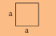 Diagram, picture of a square is given with sides marked as a |
Area, side into side, a into a = a square |
Serial Number, 2 |
Plane Figure, Rectangle |
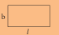 Diagram, picture description begins, picture of a rectangle is given with sides marked as l and b. picture description ends |
Area, length into breadth l into b = lb |
Serial Number, 3 |
Plane Figure, Circle |
Diagram, picture description begins, picture of a circle is given with radius marked as r. picture description ends.
|
Area, π into (radius) square, π into r square = πr square |
Serial Number, 4 |
Plane Figure, Triangle |
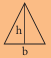 Diagram, picture description begins, picture of a Triangle with sides marked h and b. picture description ends. |
Area, One by two into base into height 1 by 2 into b into h |
Problem 1.2 (Box Item)
Find the area of the following regular shaped figures (Take π = 22 by 7).
A, A rectangle whose length is 12 metre and breadth is 4 metre.
B, A circle whose radius is 7 metres.
C, A triangle whose base is 6 metre and height is 8 metre.
Solution
A, Area of rectangle = length into breadth = 12 into 4 = 48 square metre
B, Area of circle = π into r square = (22 by 7) into 7 into 7 = 154 square metre
C, Area of triangle = 1 by 2 into base into height = 1 by 2 into 6 into 8 = 24 square metre
In our daily life, we encounter many irregularly shaped objects like leaves, maps, stickers of stars or flowers, peacock feather etc., The area of such irregularly shaped objects cannot be calculated using any formula.
How can we find the area of these irregularly shaped objects? We can find the area of these figures with the help of a graph sheet. The following activity shows how to find the area of irregularly shaped plane figures.
Activity – 1 (Box Item)
Take a leaf from any one of the trees. Place it on a graph sheet and draw the outline of the leaf with a pencil. Remove the leaf. You can see the outline of the leaf on the graph sheet.
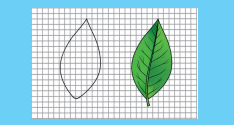
Picture, picture description begins, Leaf’s Graph Drawing is given. picture description ends.
1, Now, count the number of whole squares enclosed within the outline of the leaf. Take it as M.
ii, Then, count the number of squares that are more than half. Take it as N.
iii, Next, count the number of squares which are half of a whole square. Note it as P.
iv, Finally, count the number of squares that are less than half. Let it be Q.
Now, the approximate area of the leaf can be calculated using the following formula.
Approximate area of the leaf =
M + (3 by 4) N + (1 by 2) P + (1 by 4) Q square centimetre. Area of the leaf = dash centimetre square.
This method can be used to find the area of regularly shaped figures also. In the case of square and rectangle, this method gives the measure area accurately. This method can be used to calculate the area of any irregularly shaped plane figures.
ACTIVITY - 2 (Box Item)
Draw the following regularly shaped f figures on a graph sheet and find their area by the graphical method. Also, find their area using appropriate formula. Compare the results obtained in two methods by tabulating them.
a, A rectangle whose length is 12 centimetre and breadth is 4 centimetre.
b, A square whose side is 6 centimetres
c, A circle whose radius is 7 centimetres
d, A triangle whose base is 6 centimetre and height is 8 centimetre. Table starts
Serial Number |
Shape |
Area using formula |
Area Using graphical method |
|
|
|
|
|
|
|
|
|
|
|
|
|
|
|
|
Table ends.
DO YOU KNOW?
One square metre is the area enclosed inside a square of side 1 metre. Even though area is given in square metre, the surface need not to be square in shape
The amount of space occupied by a three-dimensional object is known as its volume.
Volume = Surface area into Height
The International System of Unit SI, unit of volume is cubic metre or metre cube
As in the case of area, the volume of a regularly shaped objects can also be determined using an appropriate formula. Table 1.4 gives the formulae used to calculate the volume of the regularly shaped objects.
Table 1.4, Volume of regularly shaped objects
Serial Number |
Object |
Figure |
Volume |
Serial Number, 1 |
Object, Cube |
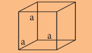 Figure, picture description begins, picture of a cube is given with sides marked as a. picture description ends. |
Volume, side into side into side a into a into a = a cube |
Serial Number, 2 |
Object, Cuboid |
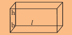 Figure, picture description begins, Picture of a cuboid is given with sides marked as l, b, h. picture description ends. |
Volume, length into breadth into height l into b into h = lbh |
Serial Number, 3 |
Object, Sphere |
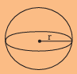 Figure, picture description begins, Picture of a sphere is given with the radius marked as r. picture description ends. |
Volume, 4 by 3 into π into (radius) cube, 4 by 3 into π into r cube = 4 by 3 π r cube |
Serial Number, 4 |
Object, Cylinder |
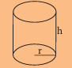 Figure, picture description begins, picture of a cylinder is given with the radius and height marked as r and h. picture description ends. |
Volume, π into (radius) square into height π into r square into h = π r square h |
Problem 1.3 (Box Item)
Find the volume of the following (Take π = 22 by 7).
a. A cube whose side is 3 centimetres.
b. A cylinder whose radius is 3 metre and height is 7 metre
Solution
a. Volume of a cube = side into side into side = 3 centimetre into 3 centimetres into 3 centimetres = 27 cubic centimetre or centimetre cube
b. Volume of a cylinder = π into (radius) square into height = 22 by 7 into 3 into 3 into 7 = 198 centimetre cube.
Liquids also occupy some space and hence they also have volume. But, liquids do not possess any definite shape. So, the volume of a liquid cannot be determined as in the case of solids. When a liquid is poured into a container, it takes the shape and volume of the container. The volume of any liquid is equal to the space that it fills and it can be measured using a measuring cylinder or measuring beaker. The maximum volume of liquid that a container can hold is known as the capacity of the container. A measuring container is graduated as shown in figure
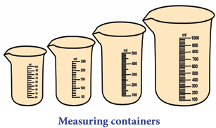
Picture, picture description begins, four measuring containers are given. picture description ends.
The volume of a liquid is equal to the volume of space it fills in the container. This can be directly observed from the readings marked in the measuring containers. If we notice the measuring cups given in figure carefully, we can observe that the readings are marked in the unit of ‘ml'. This actually represents millilitre. To understand this unit of volume, let us first understand how much a litre means. Litre is the commonly used unit to measure the volume of liquids. We know that the unit of volume is cubic centimetre if the dimensions of the object are given in centimetre. This cubic centimetre is commonly known as 'cc'. A volume of 1000 centimetre is termed as one litre (l).
1 litre = 1000 centimetre or centimetre cube
1000 milli litre = 1 litre
There is no formula to determine the volume of irregularly shaped objects as in the case of area. For such objects, volume can be determined using a measuring cylinder and water.
QR code, QR code description begins, QR Code is given, Number, 0, D, 7, S, A. QR code description ends.
ACTIVITY - 3 (Box Item)
Take a measuring cylinder and pour some water into it (Do not fill the cylinder completely). Note down the volume of water from the readings of the measuring cylinder. Take it as V1. Now take a small stone and tie it with a thread. Immerse the stone inside the water by holding the thread. This has to be done such that the stone does not touch the walls of the measuring cylinder. Now, the level of water will raise. Note down the volume of water and take it as V2. The volume of the stone is equal to the raise in the volume of water.
Volume of stone = V2 minus V1
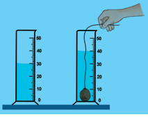
Picture, picture description begins, two measuring cylinders are given filled with water and one measuring cylinder is immersed with stone. picture description ends.
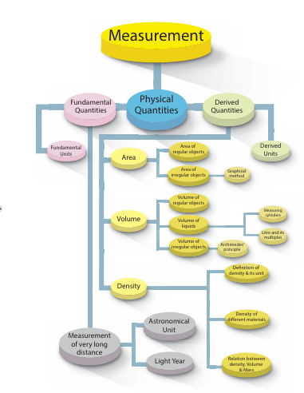
Picture, flow chart description begins, flow chart for measurement is given. In this flow chart, flow chart description ends.
Measurement divided into three types. They are, 1, Fundamental Quantities 2, Physical Quantities 3, Derived Quantities
1, Fundamental Quantities also divided into Fundamental Units and Measurement of very long distance, Measurement of very long distance divided into two types, 1, Astronomical Units 2, Light Year
2, Physical Quantities
3, Derived Quantities. Derived Quantities also divided into three types. They are 1, Area 2, Volume 3, Density,
Area is used to measure Regular Objects and Irregular Objects. Area of irregular objects are measured in graphical method.
Volume is used, to measure volume of regular objects, liquids and irregular objects. Volume of liquids are measured by measuring cylinders and litre and its multiples
Volume of irregular objects are measured by Archimedes’ principle
Density, have definition of density and its units, density of different materials and relations between density, volume and mass is given
DO YOU KNOW? (Box Item)
To measure the volume of liquids, some other units are also used. Some of them are gallon, ounce, and quart.
1 gallon = 3785 milli litre
1 ounce = 30 milli litre
1 quart = 1 litre
Take water in a beaker and drop an iron ball and a cork into the water. What do you observe? The iron ball sinks and the cork floats as shown in f figure. Can you explain why?
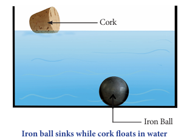
Picture, picture description begins, shows that iron ball sinks while cork floats in water. picture description ends.
If your answer is heavy objects sink in water and lighter objects float in water, then, why does a metal coin sinks in water whereas a much heavier wooden log floats? These questions can be answered if we understand the concept of density.
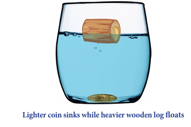
Picture, picture description begins, shows that the lighter coin sinks while heavier wooden log floats. picture description ends.
ACTIVITY – 4 (Box Item)
a, Take an iron block and a wooden block of same mass (say 1kilogram each). Measure their volume. Which one has more volume and occupies more volume? Answer, Dash
b, Take an iron block and a wooden block of same size. Weigh them and measure their mass. Which one of them has more mass? Answer, Dash
From activity 4, we observe that wooden block occupies more volume than the iron ball of same mass. Also, we observe that wooden block is lighter than the iron block of same size.
The lightness or heaviness of a body is due to density. If more mass is packed into some volume, it has greater density. So, the iron block will have more mass than the wooden block of the same size. Therefore, iron has more density.
Density of a substance is defined as the mass of the substance contained in unit volume (1 mass cube). If the mass of a substance is M and volume is V, then, its density is given as,
Density D = Mass (M) divided by Volume (V)
D = M divided by V
International Standard unit of density is kilogram divided by mass cube. The Centimeter Gram Second System unit of density is gram divided by centimetre cube.
Different materials have different densities. The materials with more density are called denser and the materials with less density are called rarer. The density of some widely used materials are listed in Table 1.4.
Table 1.5, Density of some common substances, at room temperature. Table starts.
Serial Number |
Nature |
Materials |
Density (kilogram by mass cube) |
Serial Number, 1 |
Nature, Gas |
Material, Air |
Density, 1.2 kilogram by mass cube |
Serial Number, 2 |
Nature, Liquid |
Material, Kerosene |
Density, 800 kilograms by mass cube |
Serial Number, 3 |
Nature, Liquid |
Material, Water |
Density, 1000 kilogram by mass cube |
Serial Number, 4 |
Nature, Liquid |
Material, Mercury |
Density, 13600 kilogram by mass cube |
Serial Number, 5 |
Nature, Solid |
Material, Wood |
Density, 770 kilogram by mass cube |
Serial Number, 6 |
Nature, Solid |
Material, Aluminium |
Density, 2700 kilogram by mass cube |
Serial Number, 7 |
Nature, Solid |
Material, Iron |
Density, 7800 kilogram by mass cube |
Serial Number, 8 |
Nature, Solid |
Material, Copper |
Density, 8900 kilogram by mass cube |
Serial Number, 9 |
Nature, Solid |
Material, Silver |
Density, 10500 kilogram by mass cube |
Serial Number, 10 |
Nature, Solid |
Material, Gold |
Density, 19300 kilogram by mass cube |
Table ends.
The relationship between mass, density and volume are represented in the following density triangle.
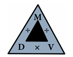
Picture, picture description begins, shows the relationship between mass, volume,density are represented in a triangle. picture description ends.
• Mass = Density into Volume
• Volume = Mass divided by Density
Problem 1.4 (Box Item)
A solid cylinder of mass 280 kilogram has a volume of 4 mass cube.
Find the density of cylinder.
Solution
Density of cylinder = Mass of cylinder divided by Volume of cylinder
= 280 divided by 4 = 70 kilogram divided by mass cube
Problem 1.5
A box is made up of iron and it has a volume of 125-centimetre cube
Find its mass if the density of iron is 7.8 gram divided by centimetre cube.
Solution
Density = Mass divided by Volume
Hence, Mass = Volume into Density
= 125 into 7.8 = 975 grams.
DO YOU KNOW? (Box Item)
Water has more density than oils like cooking oil and castor oil, although these oils appear to be denser than water. Density of castor oil is 961 kilo gram divided by mass cube. If we put one drop of water in oil, water drop sinks. But, if we put one drop of oil in water, oil floats and forms a layer on water surface. However, some oils are denser than water
Problem 1.6 (Box Item)
A sphere is made from copper whose mass is 3000 kilogram If the density of copper is 8900 kilogram per meter. find the volume of the sphere.
Solution
Density = Mass divided by Volume
Hence, Volume = Mass divided by Density
= 3000 divided by 8900
= 30 divided by 89
= 0.34 metre cube
Normally, we use centimetre, metre and kilometre to express the distances that we measure in our day-to-day life. But, for space research, astronomers need to measure very long distances such as the distance between the earth and a star or the distance between two stars. To express these distances, we shall learn about two such units, namely,
1, Astronomical unit
2, Light year
We all know that the earth revolves around the sun in an elliptical orbit. Hence, the distance between the sun and the earth varies every day. When the earth is in its perihelion position (the position when the distance between the Earth and the Sun is short), the distance between the earth and the sun is about 147.1 million kilometre. When the earth is in its aphelion position, (the position when the distance between Earth and the Sun is the largest) the distance is 152.1 million kilometre. The average distance between the earth and the sun is about 149.6 million kilometre. This average distance is taken as one astronomical unit. Neptune is 30 Astronomical Unit away from the Sun. It means it is thirty times farther than the Earth.
One astronomical unit is defined as the average distance between the earth and the sun. 1 Astronomical Unit = 149.6 million kilometre = 149.6 into 106 kilometre = 1.496 into 10 power 11 metre
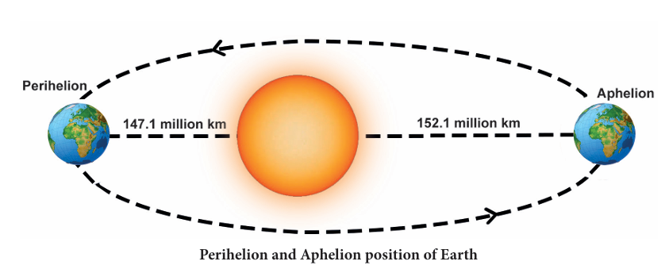
Picture, picture description begins, in the astronomical unit perihelion and aphelion position of earth is given in elliptical orbit. picture description ends.
The nearest star to our solar system is Proxima Centauri. It is at a distance of two lakhs sixty eight thousand seven hundred and seventy Astronomical Unit. We can note here that using Astronomical Unit for measuring distances of stars would be unwieldy. Therefore, astronomers use a special unit, called ‘light year’, for measuring the distance in deep space. We have learnt that the speed of light in vacuum is 3 into 10 power 8 metre per second. This means that light travels a distance of 3 into 10 power 8 metre in one second. In a year (non-leap), there are 365 days. Each day has 24 hours, each hour has 60 minutes and each minute has 60 seconds.
Thus, the total number of seconds in one year = 365 into 24 into 60 into 60
= 3.153 into 10 power 7 second
If light travels at a distance of 3 into 10 power 8 metre in one second, then the distance travelled by light in one year = 3 into 10 power 8 into 3.153 into 10 power 7 = 9.46 into 10 power 15 metre. This distance is known as one light year.
One light year is defined as the distance travelled by light in vacuum during the period of one year.
1 Light year = 9.46 into 10 power 15 metre.
In terms of light year, Proxima Centauri is at 4.22 light-years from Earth and the Solar System. The Earth is located about 25,000 light years away from the galactic centre.
QR code, QR code description begins QR CODE IS GIVEN, NUMBER, F, B, J, N, U. QR code description ends.
QR code, QR code description begins QR CODE IS GIVEN, NUMBER R, V, H, L, E. QR code description ends.
1, Choose the best answer.
1, Which of the following is a derived quantity?
a) mass b) time c) area d) length
2, Which of the following is correct?
a) 1Litre= 1cubic centimetre b) 1Litre = 10 cubic centimetre c) 1Litre = 100 cubic centimetre
d) 1Litre = 1000 cubic centimetre
3, SI unit of density is
a) kilogram per metre square, b) kilogram per metre cube, c) kilogram per metre, d) gram per metre cube
4, Two spheres have mass and volume in the ratio 2 isto1. The ratio of their density is
a) 1 is to 2, b) 2 is to 1, c) 4 is to 1, d) 1 is to 4
5, Light year is the unit of
a) distance b) time c) density d) Both length and time
2, Fill in the blanks.
1, Volume of irregularly shaped objects are measured using the law of dash
2, One cubic metre is equal to dash cubic centimetre.
3, Density of mercury is dash
4, One astronomical unit is equal to dash
5, The area of a leaf can be measured using a dash
3, State true or false. If false, correct the statement.
1, The region covered by the boundary of a plane figure is called its volume
2, Volume of liquids can be found using measuring containers.
3, Water is denser than kerosene.
4, A ball of iron floats in mercury.
5, A substance which contains less number of molecules per unit volume is said to be denser.
4, Match the following items
a.
1, Area, 2, Distance, 3, Density, 4, Volume, 5, Mass
A, light year, b, metre cube, c, metre square, d, kilogram, e, kilogram per metre
b.
1, Area, 2, Length, 3, Density, 4, Volume, 5, Mass
a, gram per centimetre cube, b, measuring jar, c, amount of a substance, d, rope e, plane figures
5, Arrange the following in correct sequence.
1, 1Litre, 100 cubic centimetre, 10 Litre, 10 cubic centimetre
2, Copper, Aluminium, Gold, Iron
6, Use the analogy to fill in the blank
1, Area is to metre square as Volume is to dash
2, Liquid is to Litre as Solid is to dash
3, Water is to Kerosene as dash is to Aluminium
7, Consider the following statements and choose the correct option.
1, Assertion: Volume of a stone is found using a measuring cylinder.
Reason: Stone is an irregularly shaped object.
2, Assertion: Wood floats in water.
Reason: Water is a transparent liquid.
3, Assertion: Iron ball sinks in water.
Reason: Water is denser than iron.
a, Both assertion and reason are true and reason is the correct explanation of assertion.
b, Both assertion and reason are true, but reason is not the correct explanation of assertion.
c, Assertion is true but reason is false.
d, Assertion is false but reason is true
8, Answer very briefly.
1, Name some of the derived quantities.
2, Give the value of one light year.
3, Write down the formula used to find the volume of a cylinder.
4, Give the formula to find the density of objects.
5, Name the liquid in which iron ball sinks.
6, Name the units used to measure the distance between celestial objects.
7, What is the density of gold?
9, Answer briefly.
1, What are derived quantities?
2, Distinguish between the volume of liquid and capacity of a container.
3, Define the density of objects.
4, What is one light year?
5, Define - Astronomical unit
10, Answer in detail.
1, Describe the graphical method to find the area of an irregularly shaped plane figure.
2, How will you determine the density of a stone using a measuring jar
11, Questions based on Higher Order Thinking Skills:
There are three spheres A, B, C as shown below. Sphere A and B are made of same material. Sphere C is made of a different material. Spheres A and C have equal radii. The radius of sphere B is half that of A. Density of A is double that of C.
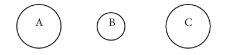
Picture, picture description begins , pictures of the spheres a, b, c are given. picture description ends.
Now answer the following questions.
1, Find the ratio of masses of spheres A and B.
2, Find the ratio of volumes of spheres A and B.
3, Find the ratio of masses of spheres A and C.
12, Numerical problems,
1, A circular disc has a radius 10 cm. Find the area of the disc in metre square (Use π = 3.14).
2, The dimension of a school playground is 800 metre into 500 metre. Find the area of the ground.
3, Two spheres of same size are made from copper and iron respectively. Find the ratio between their masses (Density of copper is 8,900 kilograms per metre cube and iron is 7,800 kilograms per metre cube).
4, A liquid having a mass of 250 gram fills a space of 1000 cubic centimetre. Find the density of the liquid.
5, A sphere of radius 1centimetre is made from silver. If the mass of the sphere is 33 gram, find the density of silver (Take π = 3.14)
13, Cross word puzzle.
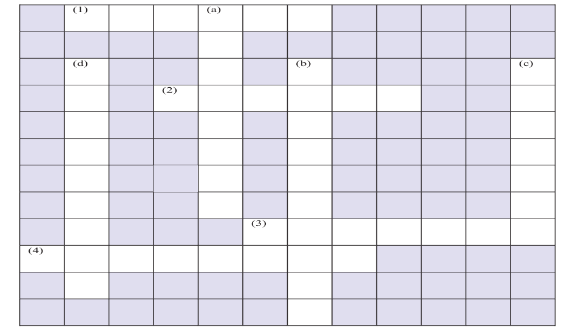
Picture, picture description begins Cross Word Puzzle Box is given. picture description ends.
Clues – Across
1, SI unit of temperature; 2, A derived quantity; 3, Mass per unit volume; 4, Maximum volume of liquid a container can hold
Clues – Down
a, A derived quantity, b, SI unit of volume, c, A liquid denser than iron, d, A unit of length used to measure very long distances
Answer
1, Kelvin; 2, Volume; 3, Density; 4, Capacity
a, Velocity; b, Cubic metre; c, Mercury; d, Lightyear
Measurement, Let’s know about the effects of mass and volume on density
PROCEDURE:
Step 1: Use the URL or scan the QR code to open the activity page.
Step 2: Select the options at top right side window to customize
Step 3: Move the sliders on the top left-side window to change the Material and Mass, Volume. Now see the effects of mass and volume on density.
Step 4: Click ‘Reset all’ button to refresh
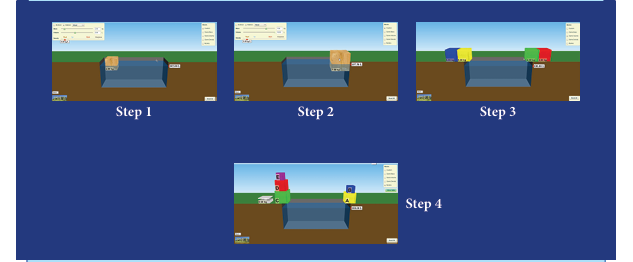
Measurement URL: https://phet.colorado.edu/en/simulation/density (or) scan the QR Code
*Pictures are indicative only
*If browser requires, allow Flash Player or Java Script to load the page
QR code, QR code description begins QR CODE IS GIVEN, NUMBER, K, Y, F, O, N. QR code description ends.
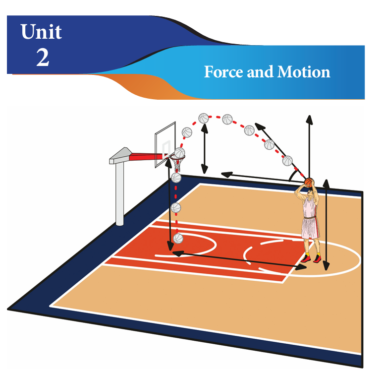
Picture, picture description begins, basketball court showing the ball is in motion. picture description ends.
QR code, QR code description begins QR CODE IS GIVEN, NUMBER, Z, F, A, L,3. QR code description ends.
Look at the picture given below. Kavitha can reach her school in two ways, as shown in the picture. Can you tell, by choosing which path she could reach the school early
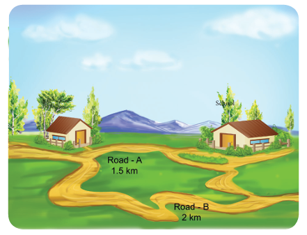
Picture, picture description begins two roads marked A, 1.5 kilometer and B, 2 kilometer from kavitha’s home to school. picture description ends.
In the picture given below, you can see leaf falling from a tree. In which path the leaf will reach the ground first?
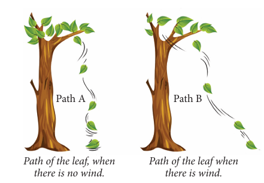
]Picture, picture description begins, shows path of the leaf, when there is no wind and another path of the leaf when there is wind. picture description ends.
Uma and Priya are friends studying in the same school. After school hours, they go to the nearby playground, play games and return back home. One day Uma told that she would reach the playground after visiting her grandmother’s house. The paths which they took to reach the playground is shown here.
Take a twine and measure the length of the two paths (A and B). Which is the longest path among the two?
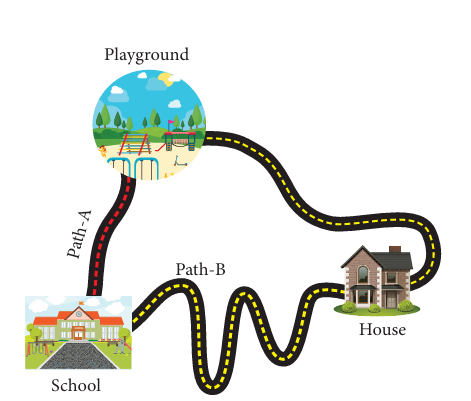
Picture, picture description begins, shows that the path A is longer than the path B. picture description ends.
From the above examples, we could conclude that when an object travels from one place to another, it will reach faster if it travels along the straight line path. The straight line path is the shortest distance between two points.
In this lesson we are going to study about distance and displacement, speed and velocity, acceleration, distance - time graph, velocity - time graph, centre of gravity and stability
The total length of a path taken by an object to reach one place from another place is called distance. The shortest distance from the initial position to the final position of an object is called displacement. Both distance and displacement possess the same unit. The SI unit distance and displacement is metre (m). The figure given below shows the motion of a person between two places A and B
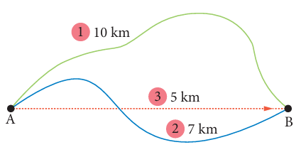
Picture, picture description begins, shows the motion of a person between two places A and B, path 1, 10 kilo meter, path 2, 7 kilometer, path 3, 5 kilometer. picture description ends.
He travels 10 kilometres along the first path. Along the second path, he travels 7 kilometres. The distance between A and B in the case of first path is 10 kilometres. In the case of second path, the distance is 7 kilometres. The shortest distance between the two places is 5 kilometre which is represented by the third path. So, the displacement is 5 kilometres (In east direction). The path of an object moving from point A to point B is shown in the figure. Total distance travelled by the object is 120 metres. The displacement of the object is 40 metres (south - east direction).
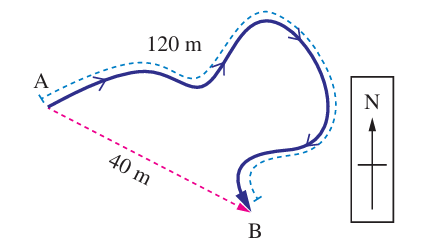
Picture, picture description begins, shows the distance travelled by the object 120 meter and the displacement by the object is 40 meter south east direction. picture description ends.
The path in which a rabbit ran is shown in the figure below. Let us consider that each square is in an unit of one square meter. The rabbit starts from point A and reaches the point B. Find the distance and displacement of it in the two figures. When will the distance and displacement be equal? (The starting point and the finishing point should be different).
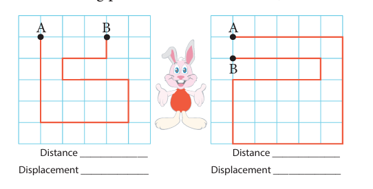
Picture, picture description begins, the distance and displacement of two points given in two different pictures with the example of rabbit motion. picture description ends.
When we represent the displacement, we use a positive or negative sign depending on the direction in which it travels
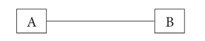
Picture, picture description begins, shows the displacement of the object from a to b. picture description ends.
Let us consider the point A as the starting point. While the object moves from A to B the displacement is considered to be positive and it is negative, when it travels from B to A.
Subha goes to the nearby playground from her home. Look at the picture and answer the following questions.
1. What is the distance she travelled?
2. What is her displacement?
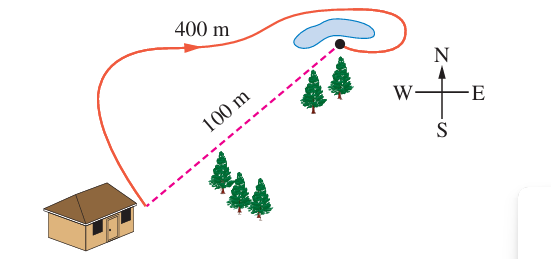
Picture, picture description begins, shows the distance travelled and displacement by subha from home to playground, distance travelled 400 meter, displacement 100 meter. picture description ends.
Can you answer the following questions? The distance travelled by an object is 15 kilometre and its displacement is 15 kilometres. What do you infer from this? The distance travelled by a person is 30 kilometre and his displacement is 0 kilometre. What do you infer from this?
DO YOU KNOW?
Nautical mile
Nautical mile is the unit for measuring the distance in the field of aviation and sea transportation. One nautical mile is 1.852 kilometre. The unit for measuring the speed of aeroplanes and ships is knot. It means that they travel one nautical mile in one hour.
In sixth standard you have already studied about speed in detail. Speed is the rate of change of distance.
Speed = Distance divided by Time
The unit of speed is metre per second (m/s). We can classify speed into two types
1, Uniform speed
If a body in motion covers equal distances in equal intervals of time, then the body is said to be in uniform speed.
2, Non- uniform speed
If a body covers unequal distances in equal intervals of time, the body is said to be in non- uniform speed.
Average Speed = Total distance travelled by Time taken to travel the distance
DO YOU KNOW?
1 kilometre per hour = 5 by 18 metre per second
How we got this?
1 kilometre = 1000 metre
1 hour = 3600 seconds
1 kilometre per hour, = 1000 metre by 3600 second, = 5 by 18 metre per second
DO YOU KNOW?
Know the speed
Tortoise, 0.1 metre per second
Person walking, 1.4 metre per second
Falling raindrop, 9 to 10 metre per second
Cat running, 14 metre per second
Cycling, 20 - 25 kilometre per hour
Cheetah running, 31 metre per second
Bowling speed of fast bowlers, 90 to 100 miles per hour
Badminton smash, 80 to 90 metre per second
Passenger jet, 180 metre per second
Rocket, 5200 metre per second
Velocity is the rate of change in displacement.
Velocity (v) = Displacement by Time
SI unit of velocity is metre by second (m by s).
Look at the figure. An athlete takes 25 second to complete a 200-metre sprint event. Find her speed and velocity
Speed = Distance by Time
= 200 by 25 = 8 metre per second
Velocity = Displacement by Time
= 50 by 25 = 2 metre per second
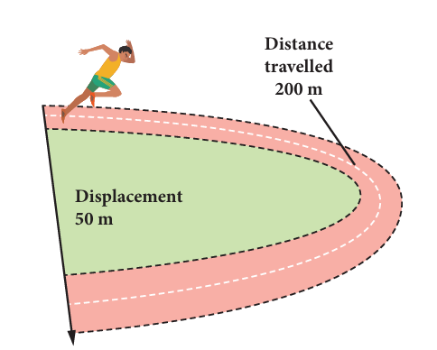
Picture, picture description begins, shows the athlete sprinting on the ground with a displacement 50 meter. picture description ends.
Uniform velocity
A body is said to have uniform velocity, if it covers equal displacement at equal intervals of time in the same direction. Example, Light travels through vacuum.
Non-uniform velocity
If either speed or direction changes, the velocity is non-uniform. Example, A train starting and moving out of the station
Average velocity
If the total displacement of an object is divided by the total time taken by the object we get the average velocity.
Average velocity = Total displacement by Total time taken
In the figure given below, a car travels 5-kilometre due east and makes a U – turn to travel another 7 kilometres. If the time taken for the whole journey is 0.2 hour, calculate the average velocity of the car.
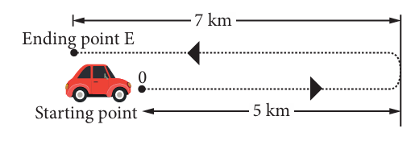
Picture, picture description begins, shows the situation of the motion of the car explained above. picture description ends.
Average velocity = Total displacement by Time taken.
(Taking the direction due east of point O as positive)
Average velocity = (5 minus 7) by 0.2
= minus 2 by 0.2
= minus 10 kilometre per hour or minus 10 into 5 by 18
= minus 25 by 9 = minus 0.28 metre per second
The triangle method can help you to recall the relationship between velocity (v), displacement (d), and time(t)
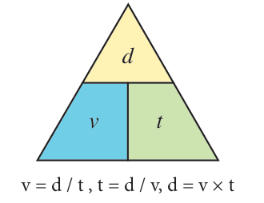
Picture, picture description begins, triangle is given to know the relationship between velocity displacement and time. picture description ends.
Velocity = displacement by time
time = displacement by velocity
displacement = velocity into time
Answer the following questions.
1, Calculate the velocity of a car travelling with a uniform velocity covering 100 metre in 4 seconds. 2, Usain Bolt covers 100 metre in 9.58 seconds. Calculate his speed. If Usain Bolt competes with a Cheetah which is running at a speed of 30 metre per second, who will be the winner?
3, You are walking along east direction covering a distance of 4 metre, then 2 metre towards south, then 4 metre towards west and at last 2 metre towards north. You cover the total distance in 21 seconds. What is your average speed and average velocity?
Acceleration is the rate of change of velocity. In other words, if a body changes its speed or direction then it is said to be accelerated.
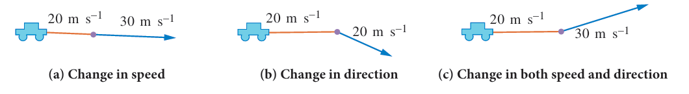
Picture, picture description begins, explaining the acceleration of the body, a) change in speed, b) change in direction, c) change in both speed and direction. picture description ends.
Acceleration = Change in velocity by Time
= Final velocity (v) – Initial velocity (u) by Time
a = (v – u) into t
SI unit of acceleration is metre per second square
A car at rest starts to travel in a straight-line path. It reaches a velocity of 12 metre per second
in 4 second. What is its acceleration, assuming that it accelerates uniformly?
Initial velocity, u = 0 metre per second (Since the car starts from rest)
Final velocity (v) = 12 metre per second
Time taken (t) = 4 second
Acceleration (a) = (v minus u) by t = (12 minus 0) by 4 = 3 metre per second square
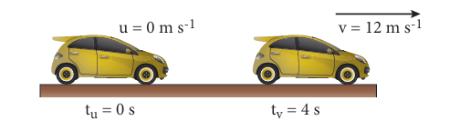
Picture, picture description begins, explains the situation of the car mentioned above. picture description ends.
QR code, QR code description starts QR code number is S18DJ is given. QR code description ends.
DO YOU KNOW?
Picture, picture description begins picture of a cheetah is given. picture description ends.
See how brisk I am! My name is cheetah. I can run at great speed. Do you know what my speed is? It is 25 metre per second to 30 metre per second. My speed changes from 0 to 20 metre per second in 2 second. See how good my acceleration is! Can you calculate it?
If the velocity of an object increases with respect to time, then the object is said to be in positive acceleration
The velocity of a train at different times is given in the figure. Analyse this and complete the table.
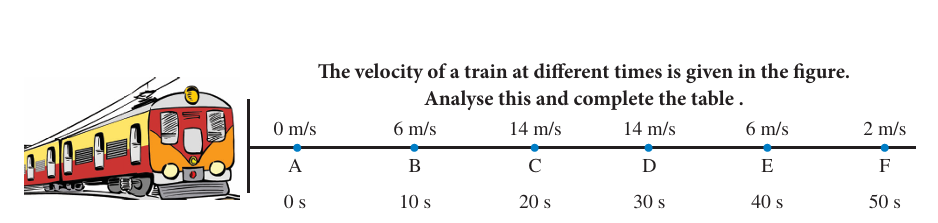
Picture, picture description begins to analyse the velocity of train at different time is given. picture description ends.
Table, Table starts
The distance travelled by train |
Initial velocity (u) meter per second |
Final velocity (v) meter per second |
Change in velocity (v minus u) meter per second |
Time taken (t) second |
Acceleration = Change in velocity by Time a = (v minus u) divided by t meter per seconds square |
A to B |
0 |
6 |
6 |
10 |
0.6 |
B to C |
|
|
|
|
|
C to D |
|
|
|
|
|
D to E |
|
|
|
|
|
E to F |
|
|
|
|
|
Table ends.
If the velocity of an object decreases with respect to time, then the object is said to be in negative acceleration or deceleration or retardation
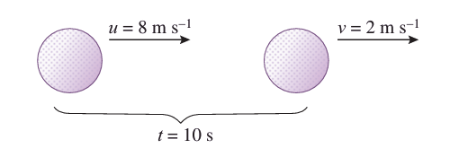
Picture, picture description begins shows the deceleration of the golf ball mentioned below. picture description ends.
The velocity of a golf ball rolling in a straight-line change from 8 metre per second, to 2 metre per second, in 10 seconds. What is its deceleration, assuming that it is decelerating uniformly?
Initial velocity (u) = 8 meter per second
Final velocity (v) = 2 meter per second
Time taken (t) = 10 second
Acceleration (a) = (v minus u) by t = (2 minus 8) by 10 = minus 0.6 meter per second square
The deceleration is minus 0.6 meter per second square.
An object undergoes uniform acceleration when the change (increase or decrease) in its velocity for every unit of time is the same.
The table given below table description begins shows the uniform acceleration of a bus. picture description ends.
Time (s) |
1 |
2 |
3 |
4 |
5 |
Velocity (metre per second) |
20+20
|
40+20 |
60+20 |
80+20
|
100+20 |
|
acceleration |
||||
Velocity (metre per second) |
100-20 |
80-20 |
60-20 |
40-20 |
20-20 |
Deceleration |
|||||
When the velocity of the object is increasing by 20 meter per second the acceleration is 20 meter per second square. When the velocity of the object is decreasing by 20 meter per second the deceleration is 20 meter per second square.
An object undergoes non–uniform acceleration if the change in its velocity for every unit of time is not the same.
Time (second) |
0 |
1 |
2 |
3 |
4 |
5 |
Velocity [meter per second] |
0 |
10 |
40 |
60 |
70 |
50 |
Change in Velocity [meter per second] |
0 |
10 |
30 |
20 |
10 |
20 |
Note here that the change in velocity is not the same for every second. Thus, the moving object is undergoing non-uniform acceleration.
A car travelling along a straight line away from the starting point O is shown in the figure. The distance of the car is measured for every second. The distance and time are recorded and a graph is plotted using the data. The results for four possible journeys are shown below.
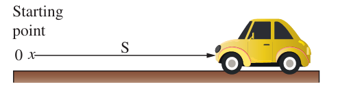
Picture, picture description begins shows the motion of a car with displacement s. picture description ends.
a. Car at rest
Time [second} |
0 |
1 |
2 |
3 |
4 |
5 |
Distance [metre] |
20 |
20 |
20 |
20 |
20 |
20 |
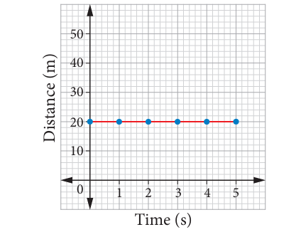
Picture, picture description begins the graph shows car at rest. picture description ends.
The graph has zero gradient. That is the distance is constant for every second. Thus, the car is at rest.
b. Car travelling at uniform speed of 10 meters per second
Time [second} |
0 |
1 |
2 |
3 |
4 |
5 |
Distance [metre] |
0 |
10 |
20 |
30 |
40 |
50 |
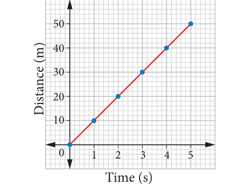
Picture, picture description begins the graph shows car travelling at uniform speed. picture description ends.
The graph has constant gradient. The distance increases 10 metre in every second. Thus, the car moves with uniform speed.
c. Car travelling at increasing speed
Time [second} |
0 |
1 |
2 |
3 |
4 |
5 |
Distance [metre] |
0 |
5 |
20 |
45 |
80 |
125 |
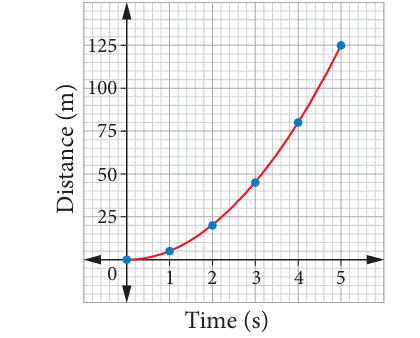
Picture, picture description begins the graph shows the car travelling at increasing speed. picture description ends.
The graph has an increasing gradient, that is, the speed increases
d. Car travelling at decreasing speed
Time [second} |
0 |
1 |
2 |
3 |
4 |
5 |
Distance [metre] |
0 |
45 |
80 |
105 |
120 |
125 |
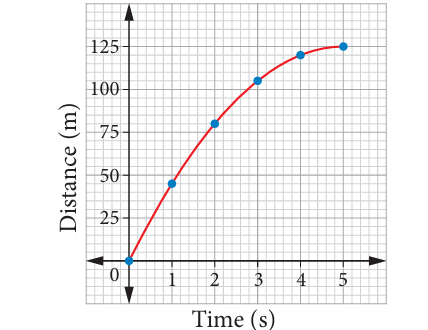
Picture, picture description begins the graph shows car travelling at decreasing speed. picture description ends.
The graph has a decreasing gradient. That is, the speed decreases
Let us consider a bus travelling from Thanjavur to Trichy. The speed of the bus is measured for every second. The speed and time are recorded and a graph is plotted using the data. It is known as speed-time graph. The results for four possible journeys are shown.
a. Bus at rest
Time (second) |
0 |
1 |
2 |
3 |
4 |
5 |
Speed (metre per second power minus 1) |
0 |
0 |
0 |
0 |
0 |
0 |
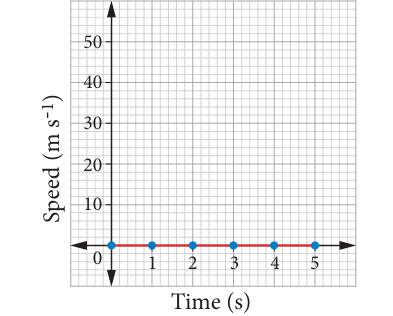
Picture, picture description begins the graph shows bus at rest. picture description ends.
The speed of the bus remains at 0 metre per second. So, the bus has zero acceleration
b. Bus travelling at uniform speed of metre per second
Time (In Seconds) |
0 |
1 |
2 |
3 |
4 |
5 |
Speed (metre per second power minus 1) |
10 |
10 |
10 |
10 |
10 |
10 |
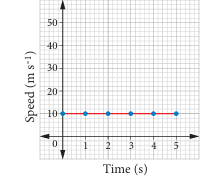
Picture, picture description begins the graph shows bus travelling at uniform speed. picture description ends.
The speed of the bus remains at 10 metre per second power minus 1. Here, slope of the line is zero. So, the bus has zero acceleration.
c. Bus travelling uniform acceleration
Time (In Seconds) |
0 |
1 |
2 |
3 |
4 |
5 |
Speed (metre per second power minus 1) |
10 |
10 |
20 |
30 |
40 |
50 |
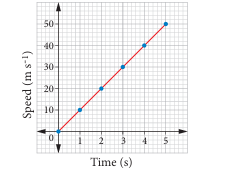
Picture, picture description begins the graph shows that the bus travelling in uniform acceleration. picture description ends.
The speed of the bus increases by 10 metre per second power minus 1 every second. Hence, the graph has a positive and constant gradient, and the acceleration is constant.
d, Bus travelling uniform deceleration
Time (In Seconds) |
0 |
1 |
2 |
3 |
4 |
5 |
Speed (metre per second power minus 1) |
50 |
40 |
30 |
20 |
10 |
0 |
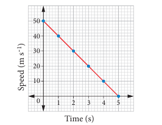
Picture, picture description begins the graph shows that the bus is travelling in uniform deceleration. picture description ends
The speed of the bus decreases by 10 metre per second power minus 1 very second. Hence, the graph has a negative and constant gradient and the acceleration is negative and constant.
e, Bus travelling with increasing acceleration (Non-uniform acceleration)
Time (In Seconds) |
0 |
1 |
2 |
3 |
4 |
5 |
Speed (metre per second power minus 1) |
10 |
2 |
8 |
18 |
32 |
50 |
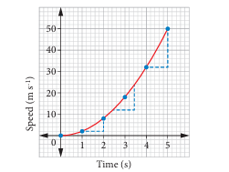
Picture, picture description begins The graph shows that the bus travelling with increasing acceleration (non- uniform acceleration). picture description ends.
The speed of the bus is increasing with time. Hence, the graph has a positive and increasing gradient and the acceleration increases.
f, Bus travelling with decreasing acceleration (non-uniform acceleration)
Time (In Seconds) |
0 |
1 |
2 |
3 |
4 |
5 |
Speed (metre per second power minus 1) |
10 |
18 |
32 |
42 |
48 |
50 |
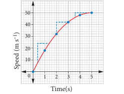
Picture, picture description begins The graph shows bus travelling with decreasing acceleration (non-uniform acceleration) picture description ends.
The speed is decreasing with time. Hence, the graph has a positive and decreasing gradient, and the acceleration decreases.
The Speed – Time graphs and Distance – Time graphs may look very similar. But, they give different information. We can differentiate them by looking at the labels.
Graph and Story
Raju began walking to his school. Suddenly he remembered that he forgot his pen and walked back home. But he stopped suddenly when he heard a noise.
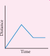
Picture, picture description begins the graph is given according to the given story. picture description ends.
Draw a graph for the given story
Rani was waiting for her mother for some time. When she saw her mother, she ran out of her home hugged her and stood there for a while.
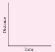
Picture, picture description begins a graph to be drawn according to the given story. picture description ends.
Imagine and write a story on your own for the given graph
Picture, picture description begins a graph is given to write a story. picture description ends.
From A to B |
From B to C |
From C to D |
Car accelerates uniformly from rest. |
From C to D Car moves at constant speed |
Car decelerates uniformly to a stop. |
Distance and Time Graph
Picture, picture description begins a distance time graph is given with the curves explained. picture description ends.
Distance in metres
Distance moved increases at an increasing rate. Hence, gradient increases (Represented by a concave curve).
Distance moved increases uniformly over time. Hence, gradient is a constant (Represented by a straight line)
Distance moved increases at a decreasing rate. Hence, gradient decreases (Represented by a convex curve).
Speed and Time Graph
Picture, picture description begins a speed- time graph is given with the curves explained. picture description ends.
Speed Metre per second power minus 1
Speed increases uniformly over time. Hence, gradient is a positive constant (represented by a straight line).
Speed is constant. Hence, the graph here is a horizontal line.
Speed decreases uniformly over time. Hence, gradient is a negative constant (Represented by a straight line)
Try to balance a cardboard on your finger tip. What do you observe? You can notice that there is only one point at which the cardboard is balanced. The point at which the cardboard is balanced is called the centre of gravity of the cardboard.
The centre of gravity of an object is the point through which the entire weight of the object appears to act. How do we find the centre of gravity of an object?
QR code, QR code description begins QR Code is given, Number, B, R, X, S, O. QR code description ends.
ACTIVITY 1
What about irregular shaped objects?
Apparatus: Irregularly shaped card, string, pendulum bob, stand
1. Make three holes in the lamina.
2. Suspend the lamina from the optical pin through one of the holes as shown in f igure.
3. Suspend the plumbline from the pin and mark the position of the plumbline on the lamina.
4. Draw lines on the lamina representing the positions of the plumbline.
5. Repeat the above steps for the other holes.
6. Label the intersection of the three lines as X, the position of the centre of gravity of the lamina.
Picture, picture description begins explaining the set-up of the activity. picture description ends.
Centre of Gravity
Total pull of the earth (weight) appears to act through the centre of gravity
Picture, picture description begins showing the weight of an object appears to act through the centre of gravity. picture description ends.
Generally, the centre of gravity of the geometrical shaped objects lie on the geometric centre of the object.
Picture, picture description begins shows the weight of a square shaped card acting through the centre of gravity. picture description ends.
Picture, picture description begins shows the weight of a triangle acting through the centre of gravity. picture description ends.
Picture, picture description begins shows the weight of a triangle disc through the centre of gravity picture description ends.
Picture, picture description begins shows the weight of a ring acting through the centre of gravity. picture description ends.
The ruler is in equilibrium when supported at its centre of gravity. For a regular object such as a uniform meter ruler, the centre of gravity is at the centre of the object. When the object is supported at that point, it will be balanced. If it is supported at any other point, it will topple.
Stability is a measure of the body’s ability to maintain its original position. Three types of stability are:
A, Stable equilibrium
B, Unstable equilibrium
C, Neutral equilibrium Let us demonstrate them by taking a frustum.
Stable Equilibrium
In stable equilibrium, the frustum can be tilted through quite a big angle without toppling.
Picture, picture description begins shows the stable equilibrium of the frustum of a cone. picture description ends.
Its centre of gravity is raised when it is displaced. The vertical line through its centre of gravity still falls within its base. So, it can return to its original position.
Unstable Equilibrium
In this equilibrium, the frustum will topple with the slightest tilting. Its centre of gravity is lowered when it is displaced.
Picture, picture description begins shows the unstable equilibrium of the frustum of a cone. picture description ends.
Here, the vertical line through its centre of gravity falls outside its base. So, it will not come back to its position
Neutral Equilibrium
It causes frustum to topple. The frustum will roll about but does not topple. Its centre of gravity remains at the same height when it is displaced. The body will stay at any position to which it has been displaced.
Picture, picture description begins shows the neutral equilibrium of the frustum of a cone. picture description ends.
Stability can be increased by the following ways.
• Lowering its centre of gravity
• Increasing the area of its base
• A heavy base lowers the centre of gravity So, the object will be stable.
• A broad base makes the object more stable.
DO YOU KNOW?
The Thanjavur Doll
It is s type of traditional toy made in Thanjavur from terracotta material. The centre of gravity and the total weight of the doll is concentrated at its bottom most point, generating a dance-like continuous movement with slow oscillations
Picture, picture description begins picture of a Tanjavur doll is given. picture description ends.
• In order to have stability, the luggage compartment of a tour bus is located at the bottom and not on the roof.
• Extra passengers are not allowed on the upper deck of a crowded double decker bus.
• Racing cars are built low and broad for stability.
• Table lamps and fans are designed with large heavy bases to make them stable.
The total length of a path taken by an object to reach one place from another place is called distance.
The shortest distance from the initial to the f final position of an object.
Acceleration is the rate of change in velocity. SI unit of acceleration is metre per second square
Velocity is the rate of change in displacement. SI unit of velocity is metre per second (m/s).
The centre of gravity of an object is the point through which the entire weight of the object appears to act.
Generally, the centre of gravity of the geometrical shaped object lie on the geometric centre of the object.
Stability is a measure of the body’s ability to maintain its original position.
The three types of stability are: stable equilibrium, unstable equilibrium, neutral equilibrium.
QR Code, QR code description begins QR Code is given, Number, 1, L, T, E, D. QR Code description ends.
1, Choose the best answer.
1, A particle is moving in a circular path of radius r. The displacement after half a circle would be
a, Zero
b, R
c, 2 r
d. r by 2
2, Which of the following figures represent uniform motion of a moving object correctly?
Picture, picture description begins distance time graph of an object is in uniform motion is given. picture description ends.
Picture, picture description begins distance time graph of an object is at rest is given. picture description ends.
Picture, picture description begins distance time graph of an object is at increasing motion is given. picture description ends.
Picture, picture description begins distance time graph of an object is at decreasing motion is given. picture description ends.
3, Suppose a boy is enjoying a ride on a merry go round which is moving with a constant speed of 10 metre per second. It implies that the boy is
a, at rest
b, moving with no acceleration
c, in accelerated motion
d, moving with uniform velocity
4, From the given v to t graph it can be inferred that an object is
a, in uniform motion
b, at rest
c, in non - uniform motion
d, moving with uniform accelerations
Picture, picture description begins distance time graph of an object is at uniform motion. picture description ends.
5. How can we increase the stability of an object?
a, Lowering the centre of gravity b, Raising the centre of gravity
c, Increasing the height of the object d, Shortening the base of the object
II, Fill in the blanks.
1, The shortest distance between two places is DASH
2, The rate of change of velocity is DASH
3, If the velocity of an object increases with respect to time, then the object is said to be in DASH acceleration.
4, The slope of the speed–time graph gives DASH
5, In DASH equilibrium, the centre of gravity remains at the same height when it is displaced.
III, Match the following.
Displacement
Light travelling through vacuum
Speed of ship
Centre of gravity of geometrical shaped objects
Stability
Knot
Geometric centre
Metre
Larger base area
Uniform velocity
IV, Analogy
1, Velocity, metre per second
Acceleration, DASH
2, Length of scale, metre
Speed of aeroplane, DASH
3, Displacement by Time, Velocity
Speed by Time, DASH
V, Answer very briefly.
1, Asher says all objects having uniform speed need not have uniform velocity. Give reason.
2, Saphira moves at a constant speed in the same direction. Rephrase the same sentence in fewer words using concepts related to motion.
3, Correct your friend who says that acceleration gives the idea of how fast the position changes.
VI. Answer briefly.
1, Show the shape of the distance and time graph for the motion in the following cases.
a, A bus moving with a constant speed.
b, A car parked on a road side.
2, Distinguish between speed and velocity.
3, What do you mean by constant acceleration?
4, What is centre of gravity?
VII, Answer in detail.
1, Explain the types of stability with suitable examples.
2, Write about the experiment to find the centre of gravity of the irregularly shaped plate.
VIII, Numerical problems.
1, Geetha takes 15 minutes from her house to reach her school on a bicycle. If the bicycle has a speed of 2 metre per second, calculate the distance between her house and the school.
2. A car starts from rest and it is travelling with a velocity of 20 metre per second in 10 seconds. What is its acceleration?
3. A bus can accelerate with an acceleration of 1 metre per second square. Find the minimum time for the bus to attain the speed of 100 km/s from 50 km/s.
IX, Fill in the boxes.
Serial Number |
First Move |
Second Move |
Distance (in metre) |
Displacement |
Serial Number 1 |
First Move, Move, 4 metres east |
Second Move, Move, 2 metres west |
6 metre |
2metres East |
Serial Number 2 |
First Move, Move , 4 metres north |
Second Move, Move, 2 metres south |
|
|
Serial Number |
First Move, Move, 2 metres east |
Second Move, Move, 4 metres west |
|
|
Serial Number 4 |
First Move, Move, 5 metres east |
Second Move, Move, 5 metres west |
|
|
Serial Number 5 |
First Move, Move, 5 metres south |
Second Move, Move, 2 metres north |
|
|
Serial Number 6 |
First Move, Move, 10 metres west |
Second Move, Move, 3 metres east |
|
|
Picture, picture description begins presence of molecules in element (Hydrogen), compound (Water), and mixtur (Hydrogen and Oxygen) is given. Elements are color in yellow. Cpmpund are colour in blue and yellow. Mixture are color in blue and yellow. picture description ends.
After studying this unit, students will be able to:
QR code, QR description begins QR Code is given, Number, N, I, 9, 1, M. QR Code description ends.
We know that everything that occupies space and has mass is called matter. Do you know what is matter is composed of? We have studied earlier that matter is composed of tiny little particles, which cannot be seen with naked eye. That particle is called atom. In this lesson, we will study about atoms, molecules, elements, compounds, chemical formulae and atomicity.
Graphite lead used in pencil is made up of an element called carbon. We can break graphite into smaller and smaller pieces. If we have a finer knife, we can break it even smaller. If we keep cutting the minuscule graphite into smaller and smaller particle, we will reach a point where we get the smallest constituent of graphite - carbon atom. If we break the carbon atom apart, the properties of carbon are exhibited. The smallest unit of an element that exhibits the properties of that element is called as ‘atom’. All the matter is composed of tiny particles called atom. Water, rice and everything we see around is made up of atoms. An atom is the basic unit of a matter.
Picture, picture description begins structure of an atom is given. picture description ends.
Even with the best of optical microscope we cannot see atoms. However, there are advanced instruments that help us to imagine the atoms on the surface of a material. For example, the following figure shows the image of the surface of silicon.
Picture, picture description begins different states of matter explained through picture-conversation is given. picture description ends.
Good afternoon, open your notebooks
Hi, can anyone tell me what solids, liquids and gases are called?
Oh, Oh “they are all states of matter”
Ummmm I forgot I was thinking about Unicorns
Excellent. Okay Fine. Can you tell me about the particles of a solid? How they move, how close they are, any patterns and how strong they are?
Sure, the particles are packed very close with little free space, they are in stacked pattern, stay in one place and vibrate. They are joined strongly but don’t move much. A bit like a bar of chocolate.
Hahaha that’s funny. I like chocolate too.
Excellent fine. Now, what about liquid Particles?
Sure, liquid particles are packed loosely with a small amount of free space between them. They are not in a pattern. They stay together but move freely around each other, also they are loosely attached to each other.
Great research. Now who can tell me about gases?
Let me check my notes, gases have lots of free space, they are in a random formation and they move randomly all over the place. They are not attached to each other at all.
Does anyone know about the fourth state of matter?
Oh! I know the fourth state of matter is plasma.
Well done Somu that’s right. See you guys on Thursday.
Picture, picture description begins survace of silican is given. picture description ends.
DO YOU KNOW? (Box Item)
The most abundant atom in the universe is the hydrogen atom. Nearly 74% of the atoms in the universe are hydrogen atoms. However, three most abundant atoms on the Earth are iron, oxygen and silicon.
When an atom combines with another atom (or atoms) and forms a compound, it is called as molecule. A molecule is made up of two or more atoms chemically combined.
Oxygen gas in the air that we breathe is made up of two oxygen atoms chemically combined.
QR Code, QR code description begins QR code is given, Number, O, X, 3, 9, 7. QR code description ends
Picture, picture description begins picture of an oxygen molecule is given. picture description ends.
Ozone is a substance that is made up of three oxygen atoms chemically combined.
Picture, picture description begins picture of an ozone molecule is given. picture description ends.
An atom of oxygen (O) and two atoms of hydrogen (H) combine to form a molecule of water (H2O).
Picture, picture description begins formation of water molecule is explained in the picture. In this Picture, 2 Hydrogen molecule, plus 2 Oxygen molecules, are given Water, is explained. picture description ends.
Molecules exhibit the properties of matter and also have individual existence. A molecule can be formed by the same or different kinds of atoms.
Molecules can be classified as below.
• A molecule which contains only one atom is called monatomic molecule (Inert gases).
• A molecule which contains two atoms is called diatomic molecule (Oxygen, Nitric oxide, Hydrogen, etcetera).
• A molecule containing three atoms is called a triatomic molecule (Ozone, Sulphur dioxide, Carbon dioxide, etcetera).
• A molecule containing more than three atoms is known as polyatomic molecule (Phosphate, Sulphur, etcetera).
A molecule of an element consists of fixed number of one type of atom chemically combined. Table 3.1, shows that gases are made up of two atoms of the same element.
Molecule of a compound consists of a fixed number of different types of atoms chemically combined. For example, let us look at the model of a water molecule below. Each molecule of water consists of one oxygen atom and two hydrogen atoms. The ratio of oxygen and hydrogen atoms remains fixed whether water is in liquid, solid or gaseous state. This principle applies to the molecules of all compounds. Compounds with different atoms are given in Table 3.2.
Picture, picture description begins model of water molecule is given. picture description ends.
DO YOU KNOW? (Box Item)
Bismuth in diarrhea medicine
Bismuth is an element that occurs naturally. It is combined with other elements to make medicine for treating diarrhea.
Table 3.1, Compounds with same atoms
Molecule |
Chlorine Gas |
Oxygen Gas |
Nitrogen Gas |
Molecule Diagram |
Picture, picture description begins diagram of a chlorine molecule is given picture description ends. |
Picture, picture description begins diagram of a oxygen molecule is given picture description ends |
Picture, picture description begins diagram of a nitrogen molecule is given. picture description ends. |
Molecule Model (Ball-and-Stick) |
Chlorine Molecule Picture, picture description begins ball and stick model of a chlorine molecule is given. picture description ends. |
Oxygen Molecule Picture, picture description begins ball and stick model of a oxygen molecule is given. picture description ends. |
Nitrogen Molecule Picture, picture description begins ball and stick model of a nitrogen molecule is given. picture description ends. |
Table 3.2, Compounds with different atoms
Molecule |
Carbon dioxide |
Ammonia |
Hydrogen Chloride |
Molecule Diagram |
Picture, picture description begins diagram of a carbondioxide molecule is given. picture description ends. |
Picture, picture description begins diagram of a ammonia molecule is given. picture description ends. |
Picture, picture description begins diagram of a hydrogen molecule is given. picture description ends. |
Molecule Model (Ball-and-Stick) |
Carbon-dioxide Molecule Picture, picture description begins ball and stick model of a carbondioxide molecule is given. picture description ends. |
Ammonia Molecule Picture, picture description begins ball and stick model of a ammonia molecule is given. picture description ends |
Hydrogen Chloride Picture, picture description begins ball and stick model of a hydrogen molecule is given. picture description ends. |
Matter is classified into two broad categories, namely, pure substances and mixtures. Pure substances are further divided into two categories as elements and compounds.
Matter in its simplest form is called an element. We are using many elements in our daily life. The common salt consists of two elements, sodium and chlorine. Water consists of hydrogen and oxygen. Magnesium and phosphorus are used for making crackers. Sulphur is used as manure in agriculture. Gallium is used for making mobile phones and silicon is used for making computer chips.
There are 118 known elements till date. Out of these, 94 elements occur naturally while 24 elements are synthesised artificially in the laboratory.
QR code, QR code description begins QR code is given, Number, 9, R, X, D, V. QR code description ends.
We can classify the elements broadly into metals, non-metals and metalloids based on their chemical properties.
DO YOU KNOW? (Box Items)
Robert Boyle is the first scientist who used the term element. He is the early proponent of the elemental nature of matter and the nature of vacuum. He is known best for Boyle's Law.
Picture, picture description begins Robert Boyle picture is given. picture description ends.
Metals
We have tools, utensils and jewellery made of silver, copper, iron, gold, aluminium, etcetera By hammering or rolling we can deform these materials into various shapes. Such elements that are malleable (a material may be flattened into thin sheets or various shapes) are called as metals. Metals are generally hard and shiny elements. Sodium is one of the exceptions as it is soft. All metals, except mercury are solids at room temperature. Mercury is the only metal that is liquid at room temperature. Metals are malleable, can be bent or beaten into sheets. They can be drawn into wires. They are good conductors of heat and electricity. Copper, lead, tin, nickel, iron, zinc, gold, magnesium and calcium are examples of metals.
Picture, picture description begins copper utensil picture is given. picture description ends.
Picture, picture description begins lead picture is given. picture description ends.
Picture, picture description begins nickel picture is given. picture description ends.
Picture, picture description begins steel picture is given. picture description ends.
Picture, picture description begins iron picture is given. picture description ends.
Picture, picture description begins zinc picture is given. picture description ends.
Non-metals
Non-metals are generally dull and soft. However, diamond is shiny and also the hardest natural substance on earth. Non-metals can be gases, solids and liquids. Non-metals such as oxygen, hydrogen and chlorine are gases at room temperature. Carbon, iodine, sulphur and phosphorus are solids at room temperature. Bromine is the only non-metal that is liquid at room temperature. Non-metals are poor conductors of heat and electricity. However, graphite (a form of the non-metal carbon) is a good conductor of electricity.
Picture, picture description begins phosphorus picture is given. picture description ends.
Picture, picture description begins sulphur picture is given. picture description ends.
Table 3.3, Difference between metals and non-metals
Table. Table description begins
Metals |
Non-Metals |
Metals are lustrous. They have a shiny surface. |
Nonmetals are non-lustrous. They have non- shiny surface. |
Metals are generally hard.
|
Non-metals are generally soft.
|
Most metals can be bent, beaten into sheets and they can be drawn into wires.
|
Non-metals cannot be bent, beaten into sheets and they cannot be drawn into wires.
|
Most metals are good conductors of electricity.
|
Non-metals are bad conductors of electricity.
|
Most metals are good conductors of heat.
|
Non-metals are bad conductors of heat.
|
Most metals make ringing sound when struck. Hence, they are used to make objects like bells.
|
Non-metals does not make any sound when they are struck.
|
Table description ends
Metalloids
Metalloids exhibit the properties of both metals and non metals. Silicon, arsenic, antimony, and boron are some examples of metalloids.
Picture, picture description begins boron picture is given. picture description ends.
Picture, picture description begins silicon picture is given. picture description ends.
Picture, picture description begins germanium picture is given. picture description ends.
Picture, picture description begins arsenic picture is given. picture description ends.
Picture, picture description begins antimony picture is given. picture description ends
Picture, picture description begins tellurium picture is given. picture description ends.
A symbol is an abbreviation or short representation of a chemical element. There is a unique symbol for each element. It represents one atom of the element. The symbol is usually derived from the name of the element, which is either in English or Latin. These symbols are accepted by the International Union of Pure and Applied Chemistry (I, U, P, A, C).
Dalton was the first scientist to use the symbols for elements in a very specific sense. When he used a symbol for an element, he also meant a definite quantity of that element, that is, one atom of that element. Berzelius suggested that the symbols of elements can be written as one or two letters of the name of the element.
The following rules are followed while assigning symbol to an element.
QR code, QR code description begins QR Code is given, Number, U, 5, W, T, B. QR code description ends
DO YOU KNOW? (Box Items)
In the beginning, the names of elements were derived from the name of the place where they were found for the first time. For example, the name copper was taken from Cyprus. Some names were taken from specific colours. For example, gold was taken from the English word meaning yellow. Now-a-days, I, U, P, A, C approves names of elements. Many of the symbols are the f first one or two letters of the element’s name in English. The first letter of a symbol is always written as a capital letter (uppercase) and the second letter as a small letter (lowercase).
ACTIVITY 1
Find out the symbols of the elements with the help of your teacher.
Elements |
Symbol |
Gold |
|
Silver |
|
Copper |
|
Iron |
|
Nitrogen |
|
Oxygen |
|
Aluminium |
|
Calcium |
|
Phosphorus |
|
Magnesium |
|
Potassium |
|
Sodium |
|
Nearly 99% of the mass of our human body consists of just six chemical elements namely, oxygen, carbon, hydrogen, nitrogen, calcium, and phosphorus. Another five elements make up most of the least percentage. They are potassium, sulphur, sodium, chlorine, and magnesium.
Air is a mixture of gases. The molecules of two different elements, nitrogen and oxygen, make up about 99% of the air. The rest includes small amounts of argon and carbon dioxide. Other gases such as neon, helium, and methane are present in trace amounts. Oxygen is the life-giving element in the air.
A compound is a pure substance that is formed when the atoms of two or more elements combine chemically in definite proportions.
Compounds exhibit properties that are entirely different from the properties of their constituent elements. For example, the atoms of the elements hydrogen and oxygen combine chemically in a fixed ratio to form the compound water. However, water does not have the same properties of hydrogen and oxygen. For example, at room temperature water exists as liquid while hydrogen and oxygen exist as gases. Also, oxygen supports fire whereas water is used as a fire extinguisher.
Similarly, common salt (Sodium chloride) is a compound made up of elements sodium and chlorine. It is used in our food, whereas sodium and chlorine are poisonous, and both are unsafe for consumption.
Picture, picture description begins sodium picture is given. picture description ends.
Sodium is a highly reactive solid at room temperature. It burns vigorously when in contact with water
+
Picture, picture description begins chlorine picture is given. picture description ends.
Chlorine is yellowish green poisonous gas at room temperature
REACT TO GIVE
Picture, picture description begins sodium picture is given. picture description ends.
Sodium Chloride (Used for cooking)
Picture, formation of sodium chloride from sodiumand chlorine is given as picture
Picture, picture description begins chalk picture is given. picture description ends.
Chalk (Calcium, Carbon and Oxygen)
Picture, picture description begins sugar picture is given. picture description ends.
Sugar (Carbon, Hydrogen and Oxygen)
ACTIVITY 2
Complete the following table.
Compound |
Constituent Elements |
Water |
|
Salt (Sodium chloride) |
|
Sodium carbonate |
|
Baking soda (sodium bicarbonate) |
|
Sugar |
|
Calcium oxide |
|
Calcium hydroxide |
|
Sodium hydroxide |
|
Potassium hydroxide |
|
ACTIVITY 3
Complete the following table.
Formula |
Number of different elements |
Name of Elements |
H2O |
H minus 2, O minus 1 |
Hydrogen, Oxygen |
NaCl |
|
|
C6H12O6 |
|
|
NaOH |
|
|
Table 3.4, Difference between an element and a compound
Table description begins
Elements
|
Compounds
|
An element is the simplest substance.
|
A compound is a chemical substance formed by the combination of two or more elements. |
Elements combine to form compounds. |
Compounds can be split into elements. |
Atoms are the fundamental particles of an element. |
Molecules are the fundamental particles of a compound. |
Table description ends.
Often, we write water as H2O. This is the chemical formula for water molecule. This means that each molecule of water has two hydrogen atoms combined with one oxygen atom. A chemical formula is a symbolic representation of one molecule of an element or a compound. It provides information about the elements present in the molecule and the number of atoms of each element. In H2O, small number beside the 'H' is called subscript. It tells us the number of atoms of that element present in the molecule. Hence, there are two hydrogen atoms in water molecule. There is no number of besides 'O'. It means that there is only one atom of that element present in the molecule. Hence, there is 1 oxygen atom in a water molecule. Can you guess the types of atoms and number of each of the atoms in sodium chloride? Which is the chemical formula for cooking salt?
Here are some examples of chemical formula.
Sodium Chloride (N,a,c,l)
1 atom of Sodium and 1 atom of chlorine
Ammonia (NH3)
1atom of Nitrogen and 3 atoms of Hydrogen
Glucose (C6H12O6)
6 Carbon atoms, 12 Hydrogen atoms and 6 Oxygen atoms
The chemical formula tells us the types of atoms and the number of each type of atom in one molecule of substance.
Table 3.5, Common compounds and their chemical formula
Names |
Formula |
Water |
H2O |
Glucose |
C6H12O6 |
Salt |
NaCl |
Ethanol |
C2H5OH |
Ammonia |
NH3 |
Sulphuric Acid |
H2SO4 |
Methane |
CH4 |
Sucrose |
C12H22O11 |
In chemistry, atomicity implies the total number of atoms present in one molecule of an element, compound or a substance. Let us see how to calculate the atomicity of elements. For example, oxygen exists as a diatomic molecule. It means that a molecule of oxygen contains two atoms hence its atomicity is 2.
Oxygen atom + Oxygen atom gives Oxygen Molecule
Similarly, a phosphorus molecule (P4) contains 4 atoms and a sulphur molecule (S8) contains 8 sulphur atoms. Hence, their atomicity is 4 and 8 respectively.
For molecule containing more than one types of atoms, simply count the number of each atom and that would be its atomicity. For example, one molecule of sulphuric acid (H2SO4) consists of 2 hydrogen atoms, 1 sulphur atom and 4 oxygen atoms. Hence, its atomicity is 7(2+1+4).
One molecule of water (H2O) contains two atoms of hydrogen and one atom of oxygen. Thus, the atomicity of water is three.
Table 3.6, Atomicity of some elements
Element |
Atomicity |
Elements |
Atomicity |
Element, H |
Atomicity, 2 |
Elements, F |
Atomicity, 2 |
Element, H e |
Atomicity, 1 |
Elements, Ne |
Atomicity, 1 |
Element, Li |
Atomicity, 1 |
Elements, Na |
Atomicity, 1 |
Element, B e |
Atomicity, 1 |
Elements, Mg |
Atomicity, 1 |
Element, N |
Atomicity, 2 |
Elements, P |
Atomicity, 4 |
Element, O |
Atomicity, 2 |
Elements, S |
Atomicity, 8 |
ACTIVITY 4
Write down the atomicity of the following elements and compounds
Elements or Compounds |
Atomicity |
Cl |
|
Na |
|
K |
|
Ca |
|
H2O |
|
Nacl |
|
In solids, particles are arranged very closely. When solids are heated, the particles in them gain energy and vibrate vigorously. They move slightly further apart from one another. This causes the volume of matter to increase. This process is called expansion. How it happens?
The matter begins to expand when heated and the volume increases due to the increase in the distance between the particles. But, the size of the particles remains same.
Picture, picture description begins arrangement of particles in the solid and liquid state is given. picture description ends.
DO YOU KNOW? (Box Item)
How do hot-air balloons float? When air inside the hot air balloon is heated with a burner, it expands. The expansion causes the density of the air inside the balloon to decrease. Hence, the air inside the balloon has a lower density than the air outside the balloon. This difference in density allows the hot-air balloon to float.
Picture, picture description begins hot air balloon picture is given. picture description ends.
During heating or expansion, the mass of matter does not change. Although the volume of the matter changes, the size and number of the particles of matter do not change. Hence, during heating, the mass of matter is conserved. For example, in an iron lock the distance between the iron particles increases when they gain enough heat. However, the number of iron particles does not change. Hence, the mass of the iron lock is conserved.
Picture, picture description begins on heating the iron lock there is no change in the number of particles is shown as picture. picture description ends.
The melting of ice is an example for change of states of matter. The change in the states of matter occurs during melting, boiling and freezing and condensation. When the particles possess enough energy, they overcome the strong forces of attraction between one another. They break free from one another and move randomly. For example, when solid ice is heated to 0 degree Celsius, it melts to become liquid water. In the same way, when liquid water is heated to 100 degrees Celsius, it boils to become steam.
Picture, picture description begins changes of states of matter is given as picture. In this picture when heat the ice it converts as water, when heat the water it gives water vapor. picture description ends.
1, Solid
When solid is heated, the particles gain energy and vibrate more vigorously
2, Liquid
When the melting point is reached melting occurs. The solid changes to its liquid state.
When a liquid is heated the particles gain energy and vibrate more vigorously.
3, Gas
Boiling occurs when the boiling point is reached. The liquid changes to its gaseous state.
Configuration of Matter
Picture, picture description begins picture of an atom is given. picture description ends
Smallest particle of an element
Picture, picture description begins picture of a molecule is given. picture description ends.
Atom makes the molecules
Picture, picture description begins picture of a compound is given. picture description ends.
Chemically simplest substance which cannot be broken down
Picture, picture description begins picture of a compound is given. picture description ends.
Two or more elements which are chemically bonded together
Picture, picture description begins chemical formula tells the number of an element in a compound. picture description ends.
Picture, picture description begins chemical symbol short representation of an element. picture description ends.
QR code, QR code description begins QR Code is given, Number, 2, J, U, N, W. QR code description ends.
1, Choose the appropriate answer.
1, Which one of the following is an example for a metal?
A, Iron
B, Oxygen
C, Helium
D, Water
2, Oxygen, hydrogen, and sulphur are examples for
A, metals
B, non-metals
C, metalloids
D, inert gases
3, Which of the following is a short and scientific way of representing one molecule of an element or compound?
A, Mathematical formula
B, Chemical formula
C, Mathematical symbol
D, Chemical symbol
4, The metal which is liquid at room temperature is
A, chlorine
B, sulphur
C, mercury
D, silver
5, An element which is always lustrous, malleable and ductile is
A, non-metal
B, metal
C, metalloid
D, gas
II, Fill in the blanks.
1, The smallest particle of matter that can exist by itself is DASH
2, A compound containing one atom of carbon and two atoms of oxygen is DASH
3, DASH is the only non-metal which conducts electricity.
4, Elements are made up of DASH kinds of atoms.
5, DASH of some elements are derived from Latin or Greek names of the elements.
6, There are DASH number of known elements.
7, Elements are the DASH form of pure substances.
8, The first letter of an element is always written in DASH letter.
9, Molecule containing more than three atoms are known as DASH
10, DASH is the most abundant gas in the atmosphere.
III, Analogy
1, Mercury: Liquid at room temperature
Oxygen: DASH
2, Non-metal conducting electricity: DASH
Metal conducting electricity: Copper
3, Elements: Combine to form compounds
Compounds: DASH
4, Atoms: Fundamental particle of an element
DASH: Fundamental particles of a compound.
IV, State true of false. If false, give the correct statement.
1, Two different elements may have similar atoms.
2, Compounds and elements are pure substances.
3, Atoms cannot exist alone. They can only exist as groups called molecules.
4, NaCl represents one molecule of sodium chloride.
5, Argon is mono atomic gas.
V, Answer in brief.
1, Write the chemical formula and name the elements present in the following compounds.
A, Sodium chloride
B, Potassium hydroxide
C, Carbon dioxide
D, Calcium oxide
E, Sulphur dioxide
2, Classify the following molecules as the molecules of element or compound.
Picture, picture description begins 1, oxygen molecule. picture description ends
2, nitrogen molecule
3, carbondioxide molecule
4, sodium chloride molecule
3, What do you understand by chemical formula of a compound? What is its significance?
4, Define the following terms with an example for each.
A, Element
B, Compound
C, Metal
D, Non-metal
E, Metalloid
5, Write the symbols for the following elements and classify them as solid, liquid and gas. Aluminum, Carbon, Chlorine, Mercury, Hydrogen and Helium
6, Classify the following as metals, non-metals and metalloids.
Sodium, Bismuth, Silver, Nitrogen, Silicon, Carbon, Chlorine, Iron, Copper
7, Classify the following as elements and compounds. Water, Common salt, Sugar, Carbon dioxide, Iodine and Lithium
8, Write the chemical formula for the following elements.
A, Hydrogen
B, Nitrogen
C, Ozone
D, Sulphur
9, What are elements? What are they made of? Give two examples.
10, Define molecule.
11, What are compounds? Give two examples.
12, Give an example for the elements derived from their Latin names.
13, What is atomicity of elements?
14, Calculate the atomicity of H2SO4
VI, Answer in detail.
1, Differentiate metals and non-metals.
2, Explain the characteristics of compounds
3, Describe the different ways in which we can write the symbols of elements. Give appropriate examples.
4, Differentiate between elements and compounds.
5, Write any five characteristics of compounds.
6, Compare the properties of metals and nonmetals. Give three examples for each.
7, Write down the properties of metalloids.
VII, Rewrite the given sentence in correct form.
1, Elements contain two or more kind of atoms and compounds contain only one kind of atom.
VIII, Higher Order Thinking Skills.
1, List out the metals, non-metals and metalloids which you use in your house, schools. Compare their properties.
2, What changes take place in the movement and arrangement of particles during heating process? 3, In the diagram given below, the circle, square and triangle represent the atoms of different elements.
Picture, picture description begins picture is given according to the question. picture description ends.
Identify all combinations that represent
A, molecule of a compound
B, molecule of an element consisting of two atoms
C, molecule of an element consisting of three atoms
4. Aakash noticed that the metal latch on gate was difficult to open during hot sunny days. However, it was not difficult to open the same latch at night. Aakash observed that the latch and the gate are exposed to the sun during day time.
A, Formulate a hypothesis based on the information provided.
B, Briefly state how you would test the hypothesis.
IX, Consider the following statements and choose the correct option.
1, Assertion: Oxygen is a compound.
Reason: Oxygen cannot be broken down into anything simpler.
2, Assertion: Hydrogen is an element.
Reason: Hydrogen cannot be broken down into anything simpler.
3, Assertion: Air is a compound.
Reason: Air consists of carbon dioxide.
4, Assertion: Air is a mixture of elements only.
Reason: Only nitrogen, oxygen and neon gases exist in air.
5, Assertion: Mercury is solid in room temperature.
Reason: Mercury is a non-metal.
A, Both assertion and reason are true and reason is the correct explanation of assertion.
B, Both assertion and reason are true, but reason is not the correct explanation of assertion.
C, Assertion is true but reason is false.
D, Assertion is false but reason is true.
Let’s build the molecules.
PROCEDURE:
Step 1: Use the URL to reach stimulation page. Click ‘Download’ and launch the stimulation.
Step 2: Drag the atoms from the kit which is at the bottom of the display to ‘make molecule’. Click on “3D” to see the molecule in 3 dimensions. And drag that molecule to ‘Your molecule collection’ on the left side window.
Step 3: Click on the ‘collect multiple’ tab on the top of the window for more molecules.
Step 4: Click on the ‘Larger molecules’ tab to make larger molecules.
Matter around us URL: https://phet.colorado.edu/en/simulation/build-a-molecule
*Pictures are indicative only
*If browser requires, allow Flash Player or Java Script to load the page.
QR code. description begins QR code is given, Number, Q, C, B, F, Z. QR code description ends.